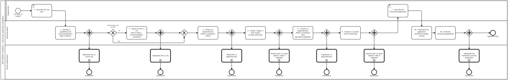
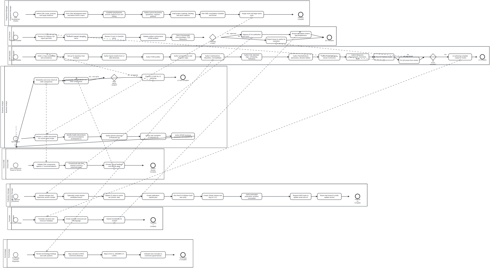
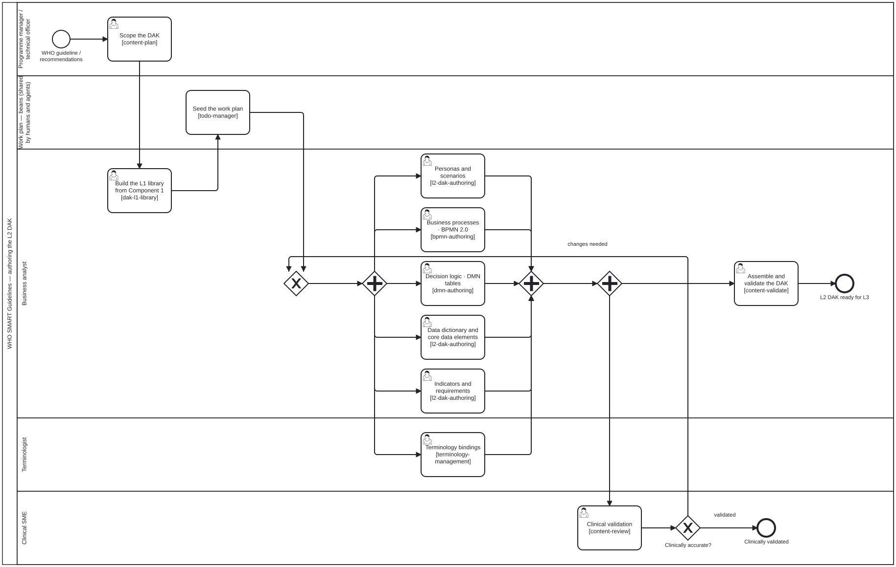
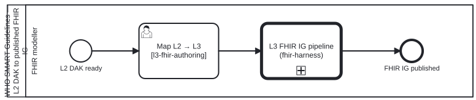

SMART Base
0.3.0 - ci-build
SMART Base, published by WHO. This guide is not an authorized publication; it is the continuous build for version 0.3.0 built by the FHIR (HL7® FHIR® Standard) CI Build. This version is based on the current content of https://github.com/litlfred/smart-base/tree/claude/zealous-cerf-ai4iv2 and changes regularly. See the Directory of published versions
Built from commit 7fa3cc78. Branch: claude/zealous-cerf-ai4iv2.
The SMART Guidelines authoring lifecycle encompasses DAK development, L3 FHIR authoring, quality control, translation, and publication. This process is defined as a BPMN 2.0 collaboration diagram with swimlanes for each authoring persona.
The process is based on the WHO SMART IG Starter Kit guidance.
The phases below describe who does the work. This section describes the order of the work, from a use case to a running application. It is the same for a new guideline and for a jurisdiction's adaptation of an existing one.
| # | Stage | Builds on | Produces | Adjudicated by |
|---|---|---|---|---|
| 0 | Describe the use case | — | population, setting, jurisdiction, interventions in scope | (requester) |
| 1 | Identify existing L1 guidelines and recommendations relevant to the use case | WHO guidelines, the jurisdiction's own guidelines | candidate L1 sources | Clinical SME |
| 2 | Ingest any source not yet in a knowledge graph (KG) | the L1 sources | structured KG assets at the generic-document level and the L1 level (recommendations, remarks, practices) | L1 extraction reviewer, Clinical SME |
| 3 | Choose the existing L2 DAKs to build on | the L1 KG; WHO DAKs and the jurisdiction's adapted DAKs | dependency list: reuse / adapt / extend / reject, with reasons | Programme Manager, Business Analyst |
| 4 | Create or adapt the L2 DAK assets (Phase 2a) | the L1 KG; the chosen DAKs | DAK components | per asset (see below) |
| 5 | Choose the existing L3 FHIR IGs to build on | the L1 KG, the L2 assets; WHO IGs and the jurisdiction's IGs | dependency list: reuse / adapt / extend / reject, with reasons | FHIR Modeller, Terminologist |
| 6 | Produce the L3 assets from the L2 assets (Phase 2b) | the L2 assets; the chosen IGs | FHIR IG | per asset (see below) |
| 7 | Describe the consuming application | the L2 personas and processes | application brief | (requester) |
| 8 | Wireframe, then build the consuming application | the application brief; the L3 IG (a clean build, not a publication) | wireframes (web and mobile); the application, with conformance tests | Requester, Business Analyst, Clinical SME, FHIR Modeller |

Adjudication is quality assurance, not a gate. Every stage is adjudicated by a person, but the next stage does not wait for it: once the L2 assets exist, the L3 assets can be produced while the L2 assets are still under review. In practice:
Each stage's work is staged as a preview before it is reviewed, so every review item links to the current (main) and the staged version of the page it changes. A reviewer approves an item, requests changes (optionally writing the change themselves), or rejects it.
Each created or changed asset gets its own review, shown the way its reviewer reads it: a rendered BPMN diagram, a decision table beside the recommendation it cites, data-dictionary rows with a wireframe of the form that captures them, a Questionnaire beside the wireframe it was built from, a profile's differential. An adapted asset is reviewed as before and after: the upstream asset beside the adapted one, with the change and the recommendation or local policy behind it. A reused asset that was not changed needs no new review.
Forms are designed at L2, as wireframes. For each step where a persona records data, two or more wireframe designs (web and mobile, filled with the real data elements) are drawn from the persona, the user scenario and the core data elements, and one is chosen in review. The L3 Questionnaire is then built from the chosen wireframe, field by field, and checked against it.
Dependency choices are adjudicated too. Stages 3 and 5 decide what the guideline inherits. Each candidate DAK or IG is recorded with its evidence in the L1 KG and a decision: reuse, adapt, extend or reject. Where a jurisdiction's adaptation covers the same scope, it is preferred over the WHO original, and the WHO original is recorded as its upstream.
Phase 1 Phase 2a Phase 2b Phase 3 Phase 4
PLANNING → L2 DAK → L3 FHIR → QUALITY → PUBLICATION
AUTHORING AUTHORING CONTROL
Programme Business FHIR QC Publication
Manager Analyst Modeller Reviewer Manager
Clinical SME Terminologist Translator
Technical Officer
The L2 authoring follows an iterative sprint cycle of Fill → Validate → Incorporate:
All of these diagrams are BPMN 2.0, and they all live in one place,
smart-base/processes/content/ in the source repository. The pictures are
generated from them by bun run smart-base/scripts/render-processes.ts;
--check fails when one is stale.


